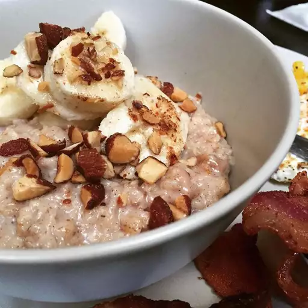

Oatmeal Recipe

How to make an Oatmeal ?
Oatmeal is the best breakfast that one can have and
you can alter it as per your preference. Below is the
list of required ingredients to make a delicious oatmeal.
- Rolled Oats
- Water or your choice of Milk
- Honey or your choice of sweetner
- Walnuts
- Your choice of fruits
Steps:
- Add Oats and water/milk to the heated pan.
- keep stirring until you get the consistency that you
like or atleast till 3 mins to soften the oats.
- Turn off the gas and pour the oatmeal in a bowl.
- Add walnuts and the fruits you like.
- Top it up with honey or your choice of sweetner.
- Your healthiest best Oatmeal breakfast is ready!